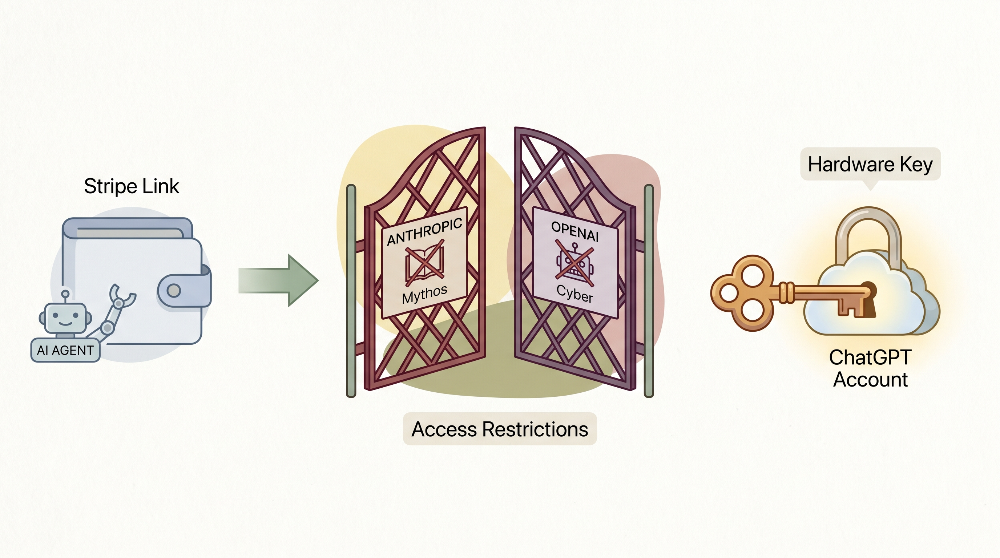

Meta面临AI故事兑现挑战，小扎面临压力
两克伴AIGC日报
2026-05-01 星期五

本期关注：Meta: 烧钱堆不出顶模， 小扎又要慌、如何 Shivon Zilis 作为 Elon Musk 的 OpenAI 内部人士运作、微调数据集：Claude Opus 4.6/4.7 - 8.7k 次对话、究竟发生了什么，计算成本怎么会这样？
📰 行业动态
Elon Musk前OpenAI内部人士Shivon Zilis在法庭上透露其角色
🔥 今日焦点
近日，Reddit用户u/AldebaranBefore发布了一项名为“Claude Opus 4.6/4.7 - 8.7k Chats”的合成微调数据集。该数据集由Claude 4.6/4.7模型生成，包含8,706个推理示例，覆盖28个类别。数据集经过基本清洗，并强调了拒绝和安全性问题。数据集分为“全数据集”、“指令集”和“角色扮演集”，分别包含8,706、7,217和1,489个示例。
这一数据集的重要性在于，它为AI领域提供了丰富的推理训练资源。在AI模型训练过程中，高质量的训练数据至关重要。该数据集的发布，有助于推动AI模型在推理能力上的提升，从而在各个应用场景中发挥更大的作用。此外，数据集的类别丰富，涵盖了多个领域，有助于模型在更多场景下的泛化能力。
近期，Reddit用户u/Party-Special-5177在论坛上发帖，询问为何计算成本飙升。据帖文内容，服务器GPU价格在Vast和Mithril平台出现异常，H100/H200/B200等型号的GPU价格在多个时段超过每小时1000美元。这一现象引发了广泛关注，因为高昂的计算成本对学术界和初创企业构成了巨大压力。作者认为，在如此高昂的成本下，迁移至RunPod等平台似乎是一个可行的选择，尽管其价格也不低。这一事件凸显了当前AI领域计算资源分配和成本控制的问题，对AI研究和发展产生了重要影响。
📚 深度长文
本文探讨了低成本海底潜水器在深海科学研究和深海采矿领域的潜在应用。美国国家海洋和大气管理局（NOAA）的“雷尼尔”号研究船正在澳大利亚与南美洲之间对超过8000平方海里的太平洋海底进行测绘，以寻找关键矿物资源。文章指出，利用低成本海底潜水器可以降低深海探测成本，提高深海科学研究效率，并可能为深海采矿提供新的技术支持。文章深入分析了海底潜水器在深海探测、资源评估和环境保护等方面的优势，为AI从业者和相关领域的研究人员提供了独特的见解和思考。阅读本文，有助于了解深海探测技术的发展趋势，以及海底潜水器在深海科学研究和深海采矿领域的应用前景。
---
《白宫重新审视其人类学对抗策略》一文由Jennifer Mossalgue撰写，发表于PLUS newsletter。文章深入探讨了白宫在人类学对抗策略上的重新思考，提出了独特的见解。作者通过分析当前国际政治、经济、科技等领域的复杂关系，揭示了白宫在人类学对抗策略上的困境与挑战。文章强调，面对日益复杂的国际形势，白宫需要重新审视其人类学对抗策略，以适应新的国际环境。
文章的核心观点是，白宫在人类学对抗策略上存在诸多问题，如缺乏长远规划、应对手段单一等。作者以多个关键论据支撑这一观点，如美国在全球治理中的地位下降、国际关系中的竞争与合作并存等。文章指出，白宫应从以下几个方面重新审视其人类学对抗策略：一是加强国际合作，共同应对全球性挑战；二是调整对外政策，寻求共赢发展；三是创新应对手段，提高国际竞争力。
近期，美国科学界遭受重创，焦点集中在国家科学基金会（NSF）的集体解雇事件上。该基金会作为联邦机构，每年投入约90亿美元资助重大科研项目，其运作由22位杰出科学家组成的董事会监管。然而，上周五，这22位科学家无一例外地被解雇。这一事件不仅对NSF的未来发展构成威胁，也对美国科学研究的整体环境产生了深远影响。文章深入剖析了这一事件背后的原因和潜在后果，揭示了政治干预对科学研究的破坏性影响，为AI从业者提供了对科学政策与科研生态的深刻洞察。阅读本文，有助于理解当前美国科研环境的变化，以及政策调整对科技创新的潜在影响。
📄 重点论文
**核心贡献**: 提出了一种双层多智能体系统，用于互联网规模的信息搜索和提取，能够处理深度推理和结构化聚合的需求。
**与AI Agent的关联**: 为AI Agent在信息搜索和提取领域的应用提供了新的解决方案，增强了Agent在复杂任务中的处理能力。
**核心贡献**: 挑战了“群体智慧”的假设，通过实验证明了代理群体在决策时可能优先考虑内部架构一致性而非外部逻辑真理。
**与AI Agent的关联**: 深入探讨了多智能体系统中的决策机制，对理解代理群体行为和优化系统设计具有重要意义。
**核心贡献**: 开发了一个统一的五智能体架构，用于从数据集和自然语言目标自动生成端到端的机器学习管道，提高了效率、鲁棒性和可解释性。
**与AI Agent的关联**: 为机器学习管道的自动化生成提供了新的思路，有助于简化机器学习流程，提高Agent的自主性。
🛠️ 产品推荐
Loopsy是一款终端和AI代理之间通信的工具，旨在实现跨机器的资源高效利用。其核心功能包括文件传输、命令执行和远程运行编码代理。通过Loopsy，用户可以轻松地在不同机器间进行数据交互和任务协同，有效解决资源闲置和效率低下的问题。此外，Loopsy还具备AI能力，能够实现远程控制，如从手机端继续Claude会话，为用户提供便捷的远程办公体验。该产品适用于技术从业者，助力提升工作效率和资源利用率。
---
Show HN: Cloudwatch Insights tool for CLI users and agents是一款专为CLI用户和代理设计的云监控工具。该工具通过CLI查询CloudWatch Insights，并利用Claude对日志进行分析，帮助用户快速定位问题，提高运维效率。该工具适用于技术从业者，能够有效解决云服务监控难题，提升运维自动化水平。
---
Show HN: Porting partially deobfuscated Old School Runescape to use LWJGL 3是一款致力于将经典游戏《老式跑团》移植至LWJGL 3框架的技术项目。该项目旨在为用户提供跨平台的游戏体验，支持Windows、Linux和Mac操作系统。通过使用LWJGL 3的JNI实现，确保了游戏在Mac Mini M4等设备上的流畅运行。此外，该项目还针对私有服务器进行了优化，以适配CheerpJ和自定义WebSocket封装，为用户提供更加稳定和丰富的游戏体验。